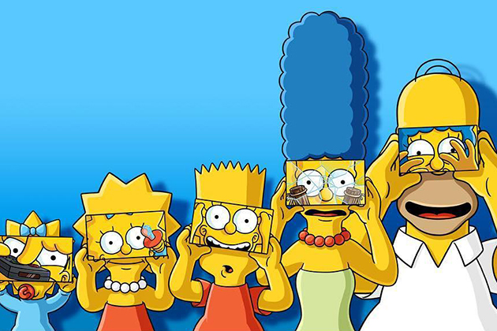

Сімпсони являють собою типову родину, що мешкає у вигаданому «середньому американському місті» Спрингфілд. Батько родини, Гомер, працює інспектором безпеки на Спрингфілдській атомній електростанції. Лінивий, страждає ожирінням. Дуже любить свою сім'ю, хоч не завжди це показує. Його дружина Мардж — стереотипна американська домогосподарка і мати. У родині троє дітей: Барт — десятирічний непослух та хуліган; Ліса — не по літах розвинена восьмирічна дівчинка і Меґґі — немовля, що в основному спілкується за допомогою звуків смоктання. Сім'я має пса на прізвисько Маленький Помічник Санти і кота Сніжка ІІ, які також отримували провідні ролі в певних серіях. Не зважаючи на події, що вказують на плин часу (щорічні свята і дні народження) персонажі «Сімпсонів» не старішають і мають такий самий вигляд, як і наприкінці 1980-х років. Протягом усіх серій одягнені у той самий одяг
Крім того в серіалі регулярно з'являються інші особи: співробітники, вчителі, родичі та друзі родини, мешканці міста, місцеві знаменитості тощо. Автори серіалу спочатку планували цих персонажів як одноразових гостей, утім багато з них посіли чільне місце в сюжеті, й деяким навіть присвячено окремі серії.
Oдин із головних героїв мультсеріалу «Сімпсони». Гомер — грубий і неввічливий батько родини, він має очевидні вади: товстий, лисий і не дуже розумний. Нерідко він поводиться як блазень, абсурдно, егоїстично і нетактовно, але все ж лишається симпатичним.
Гомер має трьох дітей: Барта, Лісу і Меґґі. Працює на Спрингфілдській атомній електростанції інспектором з безпеки. Гомер дуже лінивий і багато п'є.
За декілька років він перетворився на культового персонажа у США та багатьох інших країнах світу.
Oдин з головних персонажів анімаційного серіалу Сімпсони, дружина Гомера Сімпсона, мати Ліси і Барта. Домогосподарка, майже весь свій час проводить удома доглядаючи наймолодшу дитину Меґґі, а також Барта, Лісу і чоловіка. Найвідоміша особливість героїні — блакитне волосся зібране у високу зачіску — «вулик». Мардж названо на честь матері творця серіалу Мета Ґрейнінґа Марґарет (Мардж) Ґрейнінґ.
Мардж є втіленням стереотипного образу «матері» у ситкомах, якій часто притаманна наївність і довірливість. Незважаючи на високу «моральність», у порівнянні з іншими персонажами, Мардж також нерідко брала участь у різноманітних пригодах і витівках протягом усієї історії шоу. Серед таких: короткочасна служба у спринґфілдській поліції, лікування від «дорожньої люті», ув'язнення за пограбування магазину, нездорова пристрасть до азартних ігор, потяг до алкоголю, передозування стероїдами, шахраювання на кулінарному конкурсі та стан амнезії.
Мардж — єдиний з усієї сім'ї сумлінний парафіянин.
Oдин із головних героїв мультиплікаційного серіалу Сімпсони. Барт — найстарша дитина Гомера і Мардж Сімпсон. У нього також є дві молодші сестри — Ліса і Меґґі. Барт є втіленням образу бешкетника та посереднього учня у школі. Разом зі своїм батьком Барт є одним із найвідоміших персонажів у цьому серіалі.
Вік Барта — 10 років, а в одній із серій на запитання Гомера він відповідає, що його день народження — 23 лютого.
Найвизначніші риси характеру Барта: непослух, бешкетництво, бунтарство, неповага до авторитетів, дотепність. Протягом перших двох сезонів Барт виступав головним героєм серіалу; пізніше увагу більше сфокусувало на Гомері. Втім, Барт залишається одним із найголовніших персонажів в історії телевізійної мультиплікації США.
Персонаж анімаційного телесеріалу «Сімпсони», озвучена Ярдлі Сміт. Автор серіалу Мет Ґрейнінґ назвав героїню іменем своєї сестри.
Ліса — надзвичайно розумна восьмирічна дівчинка, один з найрозумніших персонажів серіалу (за даними різних серій її IQ становить 156 чи 159). Також грає на саксофоні. Полюбляє дивитися мультфільм «Чух і Сверблячка» разом з сім'єю.
За політичними переконаннями Ліса — типовий соціальний ліберал. Вона дотримується вегетаріанства і підтримує рух визволення Тибету. Будучи вихованою християнською родиною, дівчинка згодом стає буддисткою (на знак протесту проти комерціалізації церкви). Крім того вона підтримує дарвінізм і теорію еволюції, називаючи Дарвіна «одним з найбільших розумів» усіх часів, і висловлює захоплення неоязичницькою релігією вікка.
Одна з головних героїв мультсеріалу Сімпсони, найменша дочка Гомера Сімпсона та Мардж Сімпсон. Протягом усіх років серіалу Меґґі не росте і завжди залишається немовлям у повзунках та підгузнику. Незважаючи на свій вік Меґґі потрапляє в різні пригоди разом з своїм братом Бартом та сестрою Лісою. В одому з серіалів про майбутнє Ліси, Меґґі з'являється дорослою, але навіть там у неї немає слів. Ідею цього персонажу Мет Ґрейнінґ запозичив від своєї молодшої сестри Меґґі Ґрейнінґ.|
Меґґі — для своїх років надзвичайно розвинута дитина. Така ж розвинена, як і її старша сестра Ліса. Вона довела, що може бути самостійною: після спецрозвиваючого курсу до кінця епізоду перестала потребувати допомоги матері і врятувала батька з ув'язнення в іншому місті.
Меґґі досить тепло ставиться до людей. Але є у неї і ворог — однобровий малюк Джеральд. У 18 серії 25 сезону було показано як в майбутньому вони цілуються. Серед членів сім'ї Меґґі особливо виділяє маму. Гомер постійно забуває ім'я Меґґі і навіть те, що у нього взагалі є третя дитина, що є однією з повторюваних жартів серіалу.